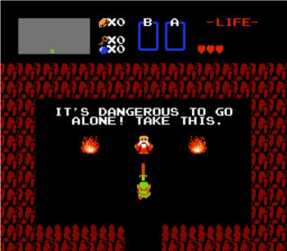
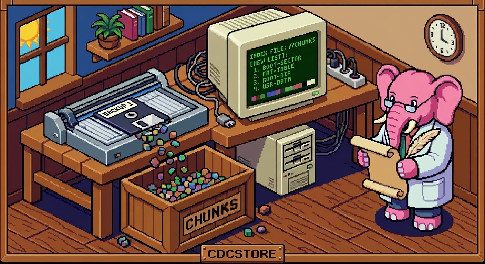
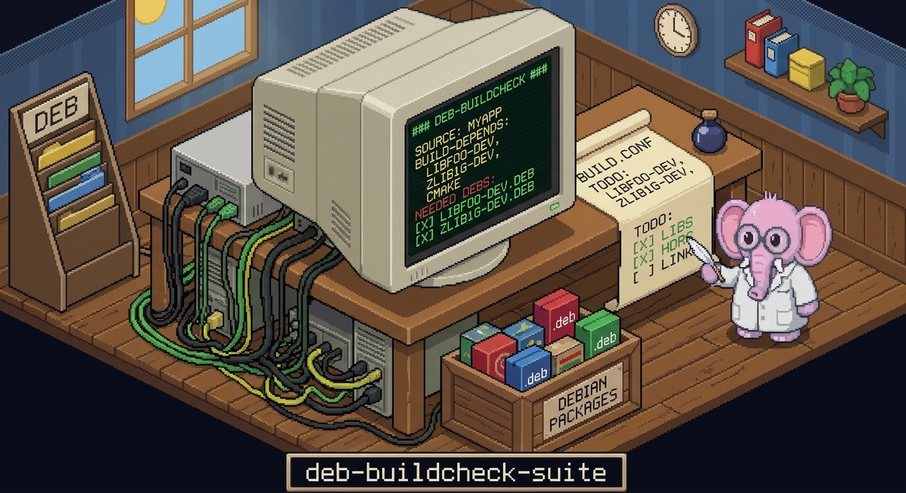
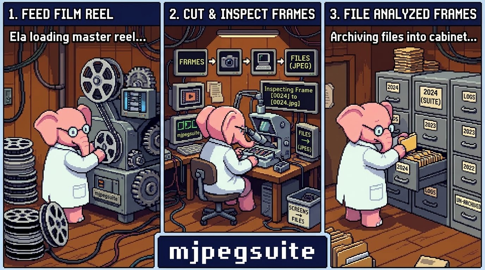
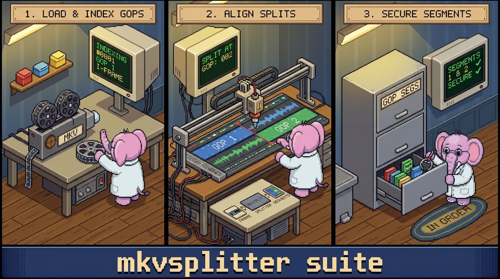
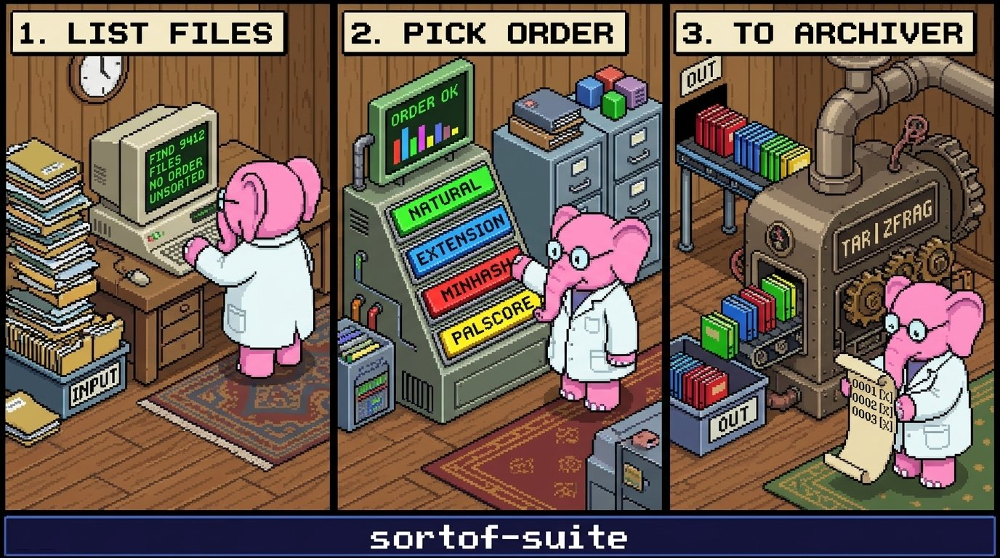
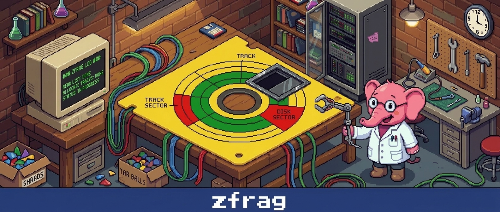
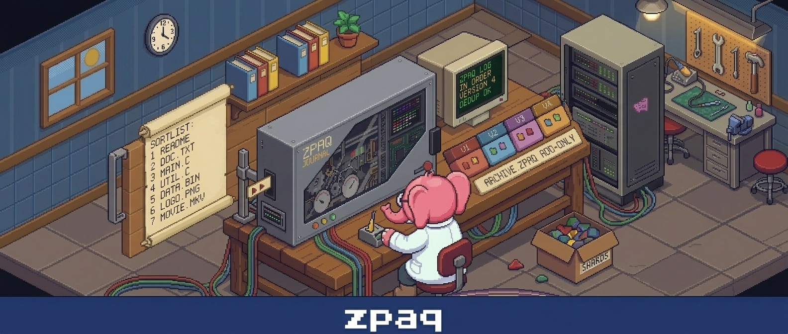
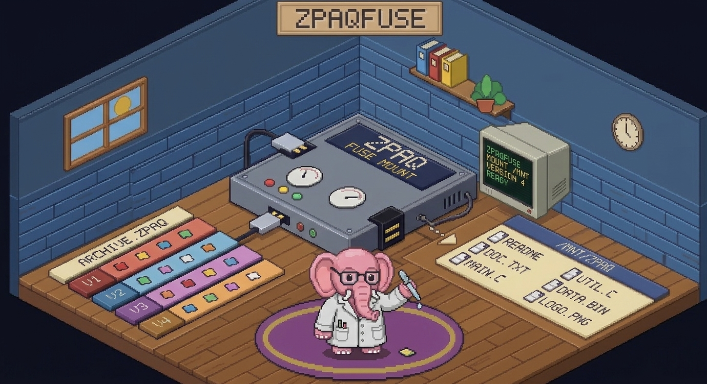

Welcome to my page, I'm glad you're here!. Over time I've made several projects. This page is to give them a personality, and to help Google find it. Most of the things here tie into what are now retro concepts such as saving your own video for making your own format later based on the playback device, archiving your files for easy use later without having to extract them, finding out what a program needs on your system to build without having to be online, making your classic games available for playback via a mountable container so you don't have eat all your disk space, and random other things. All my work is on Debian stable. I make all my projects MIT when possible. If you like what I do and want to use it then please go ahead! I'd be very humbled someone likes what I do. Just give me a credits line or something. Above all have fun and enjoy what you own without needing to always be online. github main repo page

CDCstore github repo
CDCstore in a nutshell takes a file or directory and chunks it to a specified chunk size.
It then attaches a index that is used to access them later. The index can be mounted for
transparent access, or cdcstore (add remove restore list verify) to manipulate the repo directly.
On its own it has little value, but when paired with a sorter (such as my cdcsort) it makes a
list of the most similar chunks together first. This list can then be passed to a compressor
such as a tar.zst, tar.xz etc or Dwarfs for better compression. When used with my zfrag
utility it magically mounts and only uses one FUSE call reducing system overhead.
As you'll see I made all my tools to function on thier own, or integrate with my utilities I made
to make my flow easier.

Debian buildcheck github repo
deb-buildcheck-suite is a collection of Debian focused utilites to aid in package creation.
As of now there is configcheck, makecheck, and runcheck. Each utility uses Debian's offline
ability to read the supplied package database and show what packages are required for each
phase. If the package is not installed it will query what ones can fill the void. Initial
Cmake and Meson were added Oct 29th 2026. Yes AI can do this, but it can't do it offline
in a 100kb progam. This suite alone is the main reason I love Debian.

mjpegsuite repo
mjpegsuite is a toolset to take a YUV4MPEG stream (file or piped) and break it down to JPEG
files for each frame. It does store aspect, colorspace etc. The main motivation for this
was to deduplicate TV episodes with similar scenes to aid compression. when used with
palscore frames are grouped together to aid compression. On a raw directory it can serve
streams to via a pipe to another program, or it can mount a collection to a virtual drive so
file.mkv can be served to editors that don't take stdin. zfrag has built-in support for virtual
mounting so only one FUSE call is needed. There's less "knobs" to get good quailty frames out
of JPEG and each file can be viewed in a image editer. This implentation controls the block
restart codes to make data as similar as possible. Uncompressed repos will be bigger than
other JPEG compressors, but will compress significantly better.

mkvgopsplit repo
mkvgopsplit is a simple progam with two jobs: split a mkv video file up at GOP boundaries, and
reassebmle them at later times. It's main motivation was to chop a GOP segment for submission
to whoever to show a bug, encoding flaw, etc. This is not practical for my original idea of
deduplicating MPEG-2 streams as there's little redudancy in the data. What redudancy there is
was killed by a frame offset here and there duing encodes.

sortof-suite repo
sortof-suite is a group of sorters that sort of sort data some way (yes a play on words).
Each generate a list file suitible for tar.xz etc, Dwarfs, or zfrag. the main two is cdcsort and
palscore. On video in paticular both work and give similar results but palscore is *much*
faster as it incorporates a downscale to 32x32 before sorting. I've yet to find a video
source where omiting this gave meaningfully better results.

zfrag repo
zfrag is a container I made that is mountable and seekable. It is cdcstore and mjpegstore aware.
When used with them it will make two mount directories: a native and virtual. Native will be the
actual files, while virtual will be the cdcstore file assembled files, or mjpegstore file.mkv's
as one FUSE call handles both folders it alot less intense overhead wise on reads. It's very
competive with Dwarfs when a sorted list is used as duplicates dont't take up much space. It can
also be extracted with a regular tar.zst workflow. if streaming from it 1MB frames are reccomended
while for cold storage all the way up to 32MB frames can be used.

zpaq-order repo
zpaq-order is a fork of the original zpaq code. The only modification is it has the ability to
take TAR style sortlists as input.

zpaqfuse repo
zpaqfuse is a fuse mounter for zpaq archives. It's meant for use with the original zpaq in mind.
zpaqfranz has this built into it now. This is here mainly if you dont want to install zpaqfranz
or zpaq and you just want to mount a .zpaq archive. It is a *symmetrical* compressor so it is
slow. It does save you having to do a full extraction though and that is the whole point.
I need to thank the following people/groups. Without them none of these would be possible:
--My Wife Katrina! without you I would of gave up a long time ago as I always thought who'd
want to see any of my crazy ideas. You saw them with non-techie eyes and thought they were
cool so here we are.
--The Debian Project: Debian link
Without a predictable distro that doesn't change hourly I wouldn't have a good base to work with.
That they are one of the few that have offline use in mind still and can have a whole local repo
be the source of many installs. Sane defaults and not the entire kitchen sink keep it lean on all
of my computers.
--Zstandard Team: Zstandard repo
awesome compressor with a frugal lisence is what made zfrag possible.
--ZPAQ: ZPAQ link
the idea of fragments and a index came from this. still a solid archiver, so much so I made
zpaqfuse for it
--zpaqfranz: zpaqfranz repo
awesome compressor that carries on the zpaq need. was very humbled the author wanted my fuse
work and incorporated into it's project. for non time-sensetive needs this is the ticket. Only
reason I made zfrag was the fact zpaq is symmetrical by nature and that's not a flaw, it's a trait.
--Claude: claude link
Say what you want, AI is useful. For me at least the $20 a month plan is well worth it for what
abilites Claude has. As with anything it's only as good as you are and it will mirror and help as
much as you let it.
--JPEG-Turbo: jpeg-turbo link
the implmentation I used for mjpegsuite. Tested, high quality, and aint going anywhere.
--BroCode youtube channel link
This person makes amazing tutorials for free (or donation to his charity if you can). This
entire page was made based of his teachings. If you want to learn coding in general check him out!